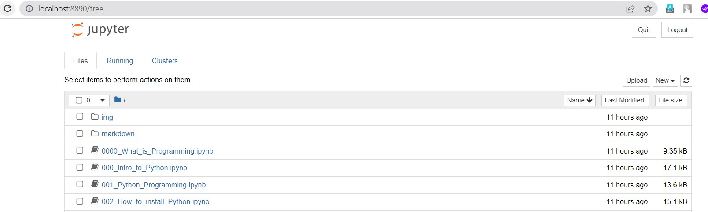
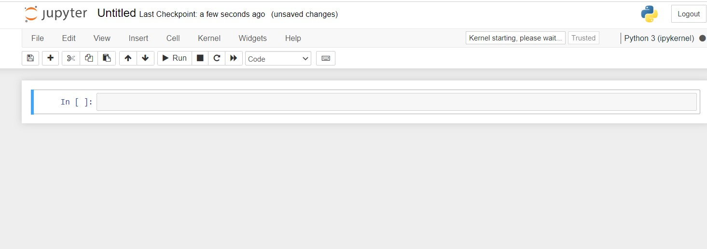

Work on Jupyter Notebook:Shortcut Keys

Once you have installed Jupyter Notebook, you can start it by opening your terminal or command prompt and typing “jupyter notebook”. This will launch Jupyter Notebook in your default web browser and open a new tab with the Jupyter Notebook dashboard.
If you haven’t installed Jupyter Notebook, follow this link to get started: Get Started with Jupyter notebook

To open a new Jupyter Notebook in Jupyter Notebook dashboard, you can click on the “New” button on the right side of the screen, which will open a new tab in your web browser with a new Jupyter Notebook. From there, you can start writing and running your code. 
Now we are ready to write, note, and execute code. Let’s begin using Jupyter Notebook and its shortcut keys to perform high-level capabilities
Command vs. Edit Modes
In Jupyter Notebook, there are two modes: command mode and edit mode.
- Command mode -Allows you to perform actions at the notebook level. Indicated by a grey cell border with a blue left margin.
- Edit mode -Allows you to type within a cell. Indicated by a green cell border with a green left margin.
If you’re in command mode, press Enter to enter edit mode. If you’re in edit mode, press Esc to enter command mode.
Command Mode
In Command mode, you can perform various actions on cells, such as creating new cells, deleting cells, copying cells, cutting cells, and pasting cells. You can also move cells up and down, merge cells, split cells, and navigate to different cells. here are some examples
- Run current cell and selecct next cell: Shift + Enter
- Run the current cell and select same cell: Ctrl+ Enter
- Run the current cell and insert new cell below: Alt+ Enter
- Save notebook: Ctrl + S
- Insert a new cell above the current cell : A
- Insert a new cell below the current cell : B
- Copy and paste : Copy with C and then paste it with V
- Deleting cell : D D (i.e., hit the D button twice)
- Merge Cell: First select the cells to merge by pressing Shift + ⬆ or ⬇ then Merge using Shift + M
- Undo : Esc + Z
- View all keyboard shortcut: H (in Command mode)
To write code, you need to switch the cell to code mode. For comments and notes, you need to switch the cell to markdown mode. By default, new cells are in code mode, but you can use the following shortcut keys to switch between markdown and code.
Y change the cell type to Code modes.
M change the cell type to Markdown modes.
Edit Mode
In Edit mode, you can edit and modify the content within a cell. This mode allows you to enter and edit text, code, and markdown in the selected cell. Some common actions you can perform in Edit mode include typing, formatting text, executing code, and creating new lines. To enter Edit mode, simply click on a cell or press ‘Enter’ key when the cell is selected. To exit Edit mode, press ‘Esc’ or click outside the cell. here are some functionalities and shortcut keys for edit modes.
- Comment in the text
Ctrl+/ - quick access to all the commands in Jupyter Notebooks:
Ctrl+Shift+P
Insert Image

- This command imports the picture named ‘mohan1.jpg’ located in the same folder as the Jupyter notebook.
Markdown
Jupyter Notebook’s markdown cells provide a way to write formatted text, headings, bullet points, links, images, and more. Markdown is a simple markup language that is easily readable and provides a lightweight way to add formatting to text.here are some examples:
Heading
In Markdown, headings can be created by using the hash symbol (#) followed by a space and the text of the heading. The number of hashes used determines the level of the heading, with one hash being the largest heading (H1) and six hashes being the smallest (H6). For example
code:
# Heading 1
## Heading 2
### Heading 3
#### Heading 4
##### Heading 5
###### Heading 6
output:
Heading 1
Heading 2
Heading 3
Heading 4
Heading 5
Heading 6
Emphasis
bold, italic, and strikethrough are formatting options in Markdown that can be used to add visual interest and clarity to text. here are some examples:
Code:
*Italic*
_Italic_
**B0ld**
__Bold__
~~Strikethrough.~~
Output:
Italic
Italic
Bold
Bold
Strikethrough.
Lists
Lists are a great way to organize and present information in Markdown. here is some examples how we can make list in ordered and unordered way in markdown.
Unordered list can be creat using *,+,- for example:
Code:
+ Item 1
- Item 2
* Item 3
Output:
- Item 1
- Item 2
- Item 3
Ordered list can be creat using numerical order: Code
1. Item 1
2. Item 2
3. Item 3
Output
- Item 1
- Item 2
- Item 3
Other Examples of list and sublist Code:
1. Today's
2. date is:
* Monday
* 16th January 1991
- hello! how are
- how are you?
- Hope doing well
Output:
- Today’s
- date is:
- Monday
- 16th January 1991
- hello! how are
- how are you?
- Hope doing well
Code
- [ ] Item A
- [x] Item B
- [x] Item C
Output
- Item A
- Item B
- Item C
Mohan Kumar Pudasaini
Data Analyst||Risk Analyst
Passionate about utilizing data to uncover valuable insights and drive actionable outcomes.